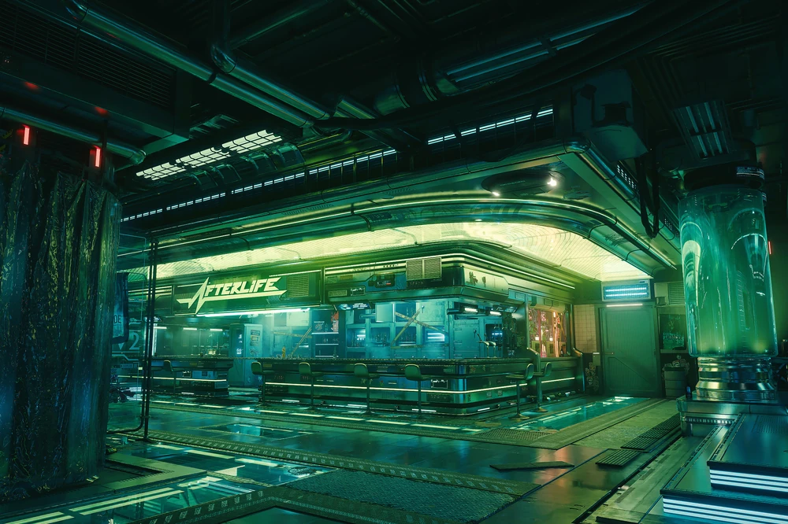

Vida nocturna
Afterlife
Afterlife es uno de los bares más famosos y emblemáticos de Night City. Ubicado en un antiguo depósito de cadáveres, este lugar se convirtió en el punto de encuentro de mercenarios, edgerunners y personajes importantes de la ciudad.
- Zona: Watson (Little China).
- Qué hacer: probar los tragos con nombres de leyendas de la ciudad, escuchar música en vivo y conocer la barra donde se reúnen los mercenarios.
- Por qué visitarlo: es el sitio más emblemático de la vida nocturna y permite conocer la cultura de los edgerunners.